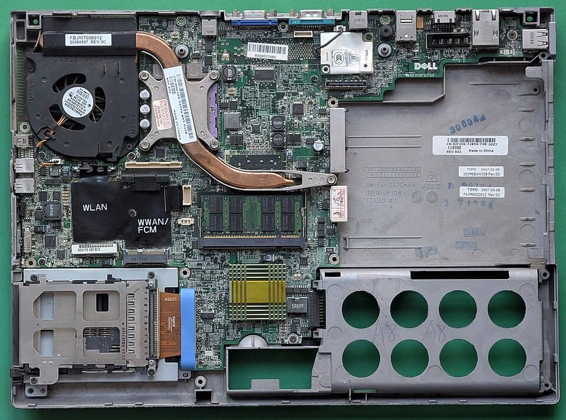

Sort an old laptop lot and qualify donor parts
Price an untested donor lot, set up a reference machine, and trace each recovered part through inspection and retest.
At the counter, decide what you can prove
Start with one or two machines of a model you can identify and support. A donor is a broken machine you keep for reusable parts. Ask the seller for model and revision, proof that they can sell the machines, the reason they were retired, a list of known faults and what happens to the drives. Ask for a firmware or diagnostics photo where available. Treat “untested” as an unknown outcome. Assign each unit a job ID. The visible exterior and part labels are enough for the first pass. Leave personal data and seller account credentials out of your record.

Photo by Siarhei Besarab, scaled with on-page callouts. Original photo · CC BY-SA 4.0.


Photo by Ogidya, scaled for the course. Original photo · CC BY 4.0.

Watch. Find the keyed memory edge and the order in which the latches engage. Use the exact guide for each laptop in the lot. Framework’s laptop memory installation clip.
Before connecting power, inspect the case, connectors, battery area and hinge line. Move a damaged or swollen lithium battery out of ordinary intake through your battery handling procedure. For wet, burned or contaminated machines use the liquid damage and battery decision. Hold unknown drives separately. A laptop can be a useful donor even if its original drive stays with the seller. Ask for permission and a data-handling decision before doing any storage work.
Set up one repeatable reference station
Choose a documented host you own. Photograph its supported charger, memory arrangement and test media. Boot it with a known-good part before using it as a reference. Check the part’s generation, interface, model and revision. One host proves only the combinations it supports.
Sort first by symptom. Does the unit recognise power, finish its power-on self-test (POST) and show an image? Is storage detected? Confirm through firmware or an approved diagnostic. With a no-power unit, prove the input first. With power present but no boot, the memory, display and storage paths now need separate checks. P87 external charging · P33 laptop power path · P60 display and cooling.
Harvest after isolation and battery disconnection according to the service guide. Assign a part ID that follows the module after removal. Hold suspect parts away from passed parts. Match the original part number and test on the reference platform. Save the installed device, test, load and result in a log.
| Recovery candidate | First proof | Decision |
|---|---|---|
| SO-DIMM | Correct memory specification, stable detection and repeatable bootable memory test at stock settings. | Record the supported host and run P91 slot/module triage. |
| SSD | Track ownership and data scope, then verify interface and device health using a test host. | Use P93 read-only qualification. |
| Fan and heatsink | Exact mechanical assembly and electrical connection, stable airflow and heat under a repeatable normal load. | Use P94 cooling donor comparison. |
| LCD panel or lid assembly | Confirmed compatibility, complete image and brightness tests, sound hinges and touch coverage if fitted. | Use P95 to separate a bad panel from its cable. |
| Removable charging jack | Exact service part, secure contacts and strain relief, stable adapter recognition and charging in a compatible host. | Use P96 DC-in harness inspection and swap. |
| Keyboard or touchpad | Known-compatible part and revision. Test keys, buttons, movement and gestures as applicable. | Use P60 input checks. Tag unsupported parts untested. |
Work out a lot price from testable yield
Use values you can substantiate for the condition and warranty you will actually sell. For the practice case, your fictional eight-laptop lot yields three whole units at ₹2,300 each and two parts at ₹450 each. Revenue is ₹7,800. Allow ₹600 for pickup, ₹1,000 for materials and testing, ₹1,750 for your time, ₹1,000 for returns, and ₹1,400 for your desired margin. The purchase ceiling under that scenario is ₹2,050. Count each unit only once. A unit sold whole cannot also produce a saleable screen in the same calculation.
One whole unit fails its final test. What changes?
If that unit has zero assessed salvage value, forecast revenue falls to ₹5,500. Keeping the same allowances gives ₹5,500 − ₹5,750 = −₹250. Even a free lot would fall short of the margin under those assumptions. Estimate another downside case with the actual parts you can test.
Record one observed condition, one untested claim, the comparison that distinguishes them and the evidence needed before sale. Keep a line for the part that cannot be qualified economically. C16 · Repair and shop records.